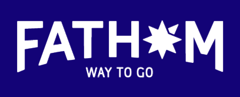

On the Grid is not a guide for tourists. We will not show you the best place to buy tacky souvenirs, connect you to generic guided tours, or recommend you to a city’s obvious attractions. We are not your travel agent. At On the Grid, we believe that travelling is a learning experience, and that meaningful exploration and discovery are priceless. Our mission is simple: to help you discover local gems, secret city spots, and new favorite places as you explore every corner of the globe. We have teamed up with hundreds of creative companies and designers from around the world to
curate the most exceptional places in each neighborhood to share with you – from interesting architecture and vintage shops to beloved local bars and bakeries, we’ve done the hard work for you. Oh, and the best part? We’re still growing! New cities and neighborhoods launch weekly, so what are you waiting for? Have a look around. Get in touch if you’d like to join us by becoming a city Ambassador. If you're interested in sponsoring On the Grid or covering us in the press, hit us up here. If you want some dope On the Grid gear, check this out.